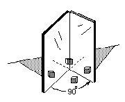
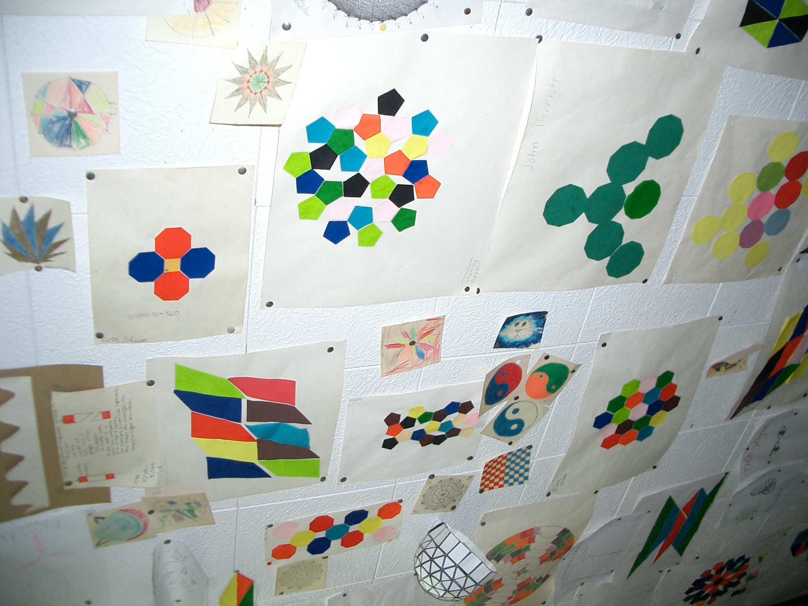
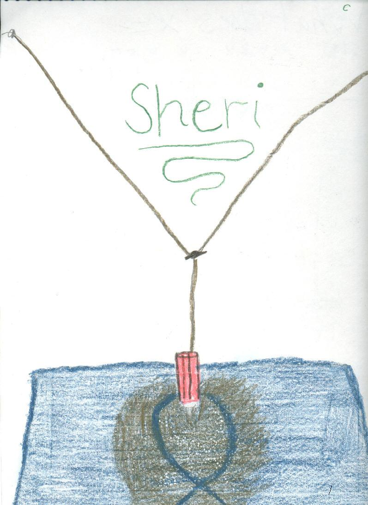

Hands-on Activities, Puzzles, & Games
that Don uses with students
An old Chinese proverb:
I hear and I forget,
I see and I remember,
I do and I understand
After watching my youngest son take apart radios and cars, after watching the videotape of Crick and Watson building a model of the DNA molecule and receiving a Nobel prize for that, I realized that young people need those kinds of experiences as they get older, and in mathematics as well! And much attention here is paid to patterns and graphing everything! And doing things more than one way.
Number
Dienes' Blocks for adding and subtracting in different bases
Balance Scale
Magic number cards (tell someone's number, based on binary system) See Sheri and Kaitlin's work.
Multiplying 12x13 using squares and strips, adding with a 5 year old
Counting (ch. 2, MAP), Square numbers, prime numbers, includes 29 ways to look at multiplication, through complex numbers
Following Archimedes to get Pi (Kohler's work, MAP)
Infinite Series (ch.1, MAP) Involves using a color-drawing of the series, to get equivalent fractions, which is bigger, is this fraction = 1?, sums, partial sums, an infinite sequence of partial sums, graph of partial sums, limit (not used early- "goes to"), patterns in the fractions, patterns in the sequence of partial sums, patterns in the limits
Cookie-Sharing (ch.2, MAP); came from a 2nd grader who shared 6 cookies between 7 people (using 3x5" cards and scissors) and managed to get an infinite series- very exciting!
Also see MarieK shares 8 cookies between 3 people to get a division problem 8 divided by 3 = 8/3 (a fraction) = 2 2/3 (a mixed number)= 2.666... (an infinite repeating decimal) = 2 + 6/10 + 6/100 + 6/1000 + ... (an infinite series) and you could probably write it other ways! . You can view the video of Don and Marie doing this on youtube at https://www.youtube.com/watch?v=j4ZPKndDWs8&feature=plcp.
Division and fractions (Maya & Sara's work, MAP)
Algebra-functions and graphs (linear, non-linear)
Guess my rule (functions on MAP)
Graphs (on MAP)-linear x+y=6, 2x+3=y to slope and intercept to the derivative (on MAP)
The Tower Puzzle-
The object is to move the tower of discs from one peg to another. The rules are: you can't put a bigger disc on top of a smaller one, you can only move one disc at a time, and later you will need to move the discs in the minimum # of moves. Don starts young people off with maybe only 3 discs. Then lets the student start with more.
The Math: an exponential function, positive and negative exponents, negative numbers with fractions, patterns in the table. It shows how the number of disks is related to the number of moves to move the disks to another peg. See Sheri's work with the Tower Puzzle. See there also, the 3D rotation of the graph of the Tower Puzzle in wire.
The Shuttle Puzzle or The Peg Game- the object of the game is to interchange the red pegs with the black pegs. Rules: 1.) You can move to an open space next to one, or 2.) you can jump, but only one peg of the other color, and 3.) you can't move backwards.

The math: The Peg Game or Shuttle Puzzle leads to a quadratic function, multiplying signed numbers, a parabola (see Nanako's work below Sheri's).
Hinged Mirrors- math->science

see Michael's work on the MAP: angle between mirrors vs # of images- gets a quadratic function, an hyperbola. Also reflection of light (angle of incidence = the angle of reflection) gets the position of the images.
Algebra- solving equations
By guessing (see Ch.8 , linear equations and 10 ways to solve a quadratic equation on MAP)
Balance pictures (see CH.8, MAP)
Iterating functions (see CH.8a and MAP and Video of Jenny using 1 of the 10 methods)
Algebra- identities MAP
Making up identities - statements that are true for every substitution Natalie2.html finds (a + b)2 = a2 + 2ab + b2 and the difference of 2 squares
Don has 2-cm cubes which he made into the pieces below. He has students build a cube out of them, then name each piece and write the identity. (A + B)3= A3 + 3* A2*B + 3*A*B2 + B3

Maggie finds the difference of 2 cubes, The difference of 2 cubes IES applet; and recently Don asked Shaleen to find the factorization of A4 - B4 which is also the difference of 2 squares, which he had done!
Identities for Logarithms by Kavi and Kevin
Trig identities by looking at the 6 trig functions in one diagram
Geometry
Geometric transformations the fine Java applet by IES on Don's website, problems from Don's book "Changing Shapes With Matrices" and Sheri's work
Tessellations- using gummed shapes from Scotland, using M.C. Esher's ideas (see Abe's work). The ceiling in Don's mathroom, below
The Soma Cube-students make their own set from white Cuisenaire rods (see Olivia's work, and Erin's 16 ways to make the cube)
M. C. Escher Kaleidocycles- cut out pieces
Use of Cuisenaire RodsSA/Vol ratio of rods(Nanako's work, MAP) why you grate cheese to put on spaghetti & why rodents are nocturnal animals
Vol of Pyramid/Vol of cube ratio- 3 ways (Volume Relationship Set- water poured into shapes,rods, Mathematica, see Sheri's work)
make trains as long as the yellow rod (gets Pascal's triangle),
Genny doubles the size of a dog, what happens to the volume?
Build the 7 Soma pieces (Olivia) to make the 3x3x3 cube, and Erin's 16 ways to make the cube
Area of rectangles of constant perimeter of 20,(ch.14,MAP)
Perimeter of rectangles of constant area of 36, (ch.14, MAP)
Start the binomial expansion (using squares and cubes, MAP)
Number of routes between points...taxicab geometry
make trains as long as the yellow rod (gets Pascal's triangle),
How lengths, squares and cubes grow (ch. 6, MAP)
Finding the area and perimeter of the snowflake curve (see Emily's work Ch.4, MAP) uses triangular graph paper, counting, infinite series, factoring
How the Nautilus shell grows (ch. 6, the Nautilus shell spiral (MAP) uses the change in 360o of the radii (in mm) and angle of the tangent to the curve. And finding the growth of the volume of a chamber, by Vickie (chapter 6).
Similar shapes within the nautilus - uses "the eye test" for similarity (ch. 6)
Using a Pantograph to enlarge Bugs Bunny by Roxana and reduces a shell, by Sheri. See the IES applet to do this.
Rotagram (from Scotland)- used for finding equal angles with parallel lines and sum of interior and exterior angles of a polygon- see Anna's workPolyominoes
Pattern blocks
GeoBlocks- different sizes and shapes of blocks; how many of these make this?
Polyhrdra- find the #of vertices(V), # of edges(E), & # of faces(F). Find a pattern/ relationship between these
Area within shapes on a square geoboard, Geoboard Magic leads to 3D graphs with Pick's theorem and the integral- (Ch.13, MAP)circular geoboard for angles in a circle, also used to relate time zones and latitude and longitude on a globe.
Sticks and rubber bands (See NCTM "Readings in Geometry"; 1970; pp. 3-8).
Using the genuine "Whats It" below- what curve does it make?Try to find the equation of the curve. See how Don helped Heidi figure this out.
-
Fibonacci numbers & The Golden Mean
Using the Fibonacci nos. to make a golden rectangle (chapter 7).
Jamie solves a quadratic equation to get The Golden Mean (MAP)
Getting the Fibonacci numbers from a Sunflower head (Ch. 7, MAP)
Powers of Phi from the pentagon (Ch. 7, MAP)
The golden triangle & spiral from a pentagon (CH.7, MAP)
Geoffrey graphs the ratios of the Fibonacci numbers and writes a program to get the infinite sequence which has a limit (CH.7, MAP).
The Golden angle (CH.7, MAP).
Graphs: LOTS & LOTS
linear x+y=6 ++ (MAP graphs)- all operations, negative nos., fractions; parabola (MAP non-linear), x2+ky2 = 25 (different values of K to get lines, circle, ellipses & hyperbolas- MAP), exponential (MAP), moving graphs (MAP), 3D (and in DPGraph)
Find the slope of a ramp (or mountain,..MAP)->slopes of lines, curves -> the derivative (ch. 14, MAP)
Comparing the spirals of fibonacci numbers, the Nautilus shell, and The equal-tempered Musical scale
See Cristobal Vila's beautiful short movie "Nature by Numbers" at http://www.etereaestudios.com/docs_html/nbyn_htm/intro.htm
See Xah Lee's site on curves- especially the equiangular spiral See Lori and Don's Nautilus shell applet which shows the growth of the spiral Nautilus shell from 1 to 3.2 times in 360o and the constant angle of 79.5o between the tangent to the curve and the radius.
Trigonometry
Begining trig
Oscilloscope and Oscillator- to show Sin waves and the addition of sin waves at right angles to get Lissajus figures (by Jonathan-later made my map clikable!)

and by Ian, as a 4th grader, graphs sine waves at right angles to get a bowtie and a pretzel! And see the IES Java Applet showing all the 6 trig functions on one diagram!
Don set up the complex sand pendulum in the math room. The strings at the top are adjustable so one can change the total height of the pendulum (pendulum #1). The strings come together to form a smaller pendulum (pendulum #2) and are held together by an alligator clip so this height can be changed. The sand is in a ketchup bottle. When the ketchup bottle is pulled off center, the pendulums will swing, perpendicularly, forming "Lissajous" figures like the one shown in Sheri's drawing. The pattern in the sand is determined by the ratio of the frequencies of the 2 pendulums (in this case 3:2).

Using trig to do rotations with matrices (was in the Japanese version of Don's book Changing Shapes With Matrices).
See Lori Johnson Morse's Wolfram demonstartion projects which do Don's transformations from his book, but in different ways.
Science->math
Racetrack (velocity and acceleration game by Nievergelt(sp?))
Measuring the length and resistance in a wire
Hinged Mirrors (MAP)-light, reflection and images -leads to a quadratic function, - an hyperbola (see Ch.6)
SA/Vol ratio of rods and why rats are noctunal animals ((Nanako's work, MAP)
Math from BubblesRecording timer- distance vs time - see Map, to get velocity and acceleration.
Miscellaneous puzzles and games
Nim
Sprouts
Conway's Game of Life

Wooden Puzzles
6-piece burr puzzle

Magic square

Metal Puzzles
Don also uses Mathematica, Wolfram Alpha, GeoGebra, Scratch, DPGraph, Basic & calculators
References
Martin Gardner's booksW.W. Sawyer's books
"Puzzles Old & New", by Slocum and Botermans

{kind=link}
{kind=link}